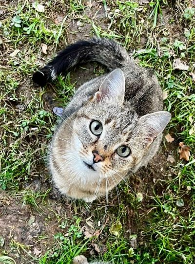
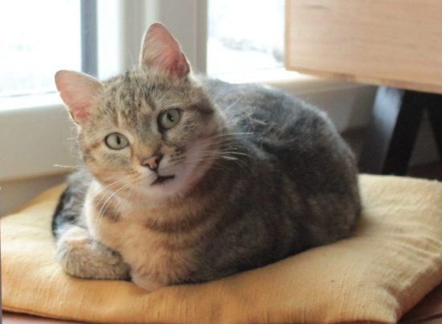
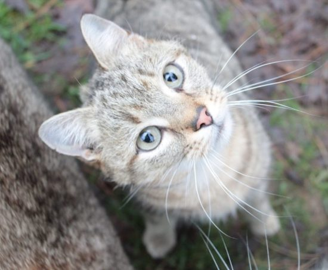
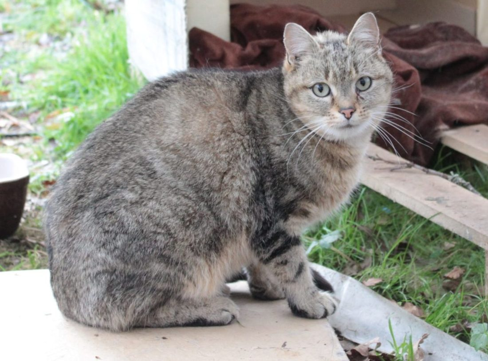

Touffy
Touffy fait partie des chats libres que nous souhaitons faire adopter. Découvert avec 18 autres congénères sur une immense propriété laissée plus ou moins à l’abandon, nous avons choisi, avec nos faibles moyens, de tous les mettre en règle. Une fois stérilisés et identifiés, nous avons installé un point de nourrissage sur leur lieu de vie, afin de les aider à se remplumer.
Certains de ces minous se sont étonnamment vite acclimatés à notre présence régulière. Touffy fait partie des tout premiers à nous avoir accordé sa confiance.
Touffy est une crème avec les humains! D’une nature très très sociable, il s’est vite fait une place dans le coeur des bénévoles qui l’ont nourri, avant qu’il soit placé en famille d’accueil.
En effet, un matin en venant les nourrir, nous l’avons découvert dans un état inquiétant. Après plusieurs examens médicaux, il s’avère qu’il a fait un AVC entre deux passages des nourrisseuses. Impossible qu’il reste dehors dans cet état ; nous avons réussi à lui faire une place en famille d’accueil, et depuis, monsieur coule des jours heureux en attendant sa famille pour la vie. Il s’est assez vite approprié ce nouveau corps, à présent il a retrouvé toute sa mobilité : il marche et court sans aucun souci, même dans l’escalier, il joue avec les chats de la famille, il grimpe sur la table malgré les invectives de sa maman d’accueil… Deux petites difficultés persistent : il panique énormément lorsqu’il est soulevé et si les humains bougent trop vite. En dehors de cela, il est exactement tout ce que l’on attend d’un chat affectueux.
Un petit plus : une famille sans enfant en bas âge et sans chien de grand gabarit ou un peu trop foufou serait l’idéal. Nous lui souhaitons une vie aussi paisible que possible.
En Résumé
- Mâle
- estimé au 1er août 2022
- un congénère chat
- maison avec extérieur
- Sans chien trop dynamique
- 140 euros
Son caractère
- Très câlin
- Gourmand (trop!)
- Doux et gentil
Actuellement
- Stérilisé
- Vermifugé et déparasité
- Vacciné
- Visible à St Léger Magnazeix


